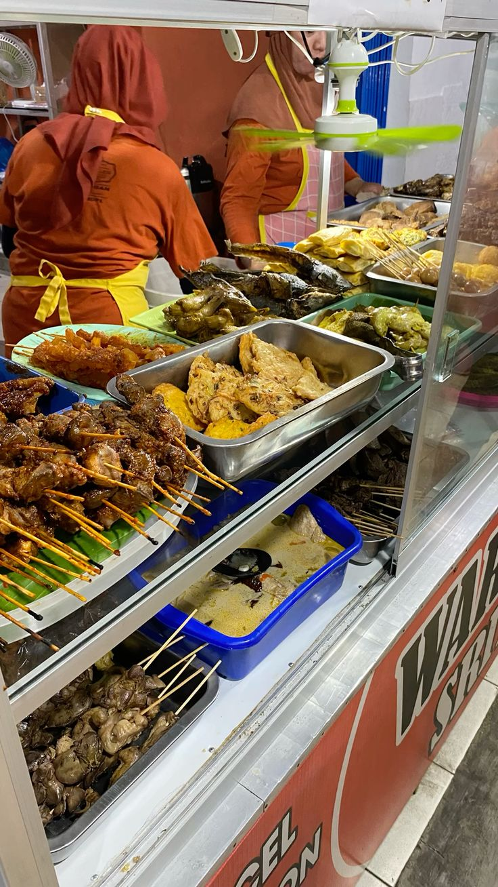

: Awal Berdiri
Berdiri sebagai warung kecil di depan rumah Ibu Sri Wahyuni, menjual satu porsi pecel dengan telur sebagai satu-satunya lauk.
NASI PECELS
NASI PECELS adalah usaha kuliner UMKM yang menyajikan nasi pecel khas Blitar, dikelola Ibu Sri Wahyuni di Jalan Kenanga Raya Nomor 17, Kota Blitar, Jawa Timur.

Blitar dikenal memiliki pecel dengan ciri khas pada sambal kacangnya. NASI PECELS berupaya menyajikannya dengan tetap menghormati cita rasa aslinya.
Berdiri sebagai warung kecil di depan rumah Ibu Sri Wahyuni, menjual satu porsi pecel dengan telur sebagai satu-satunya lauk.
Lauk bertambah menjadi telur, lele, ayam, dan rempela; mulai tersedia teh, jeruk, dan kopi.
Layanan bungkus dibuka setelah banyak pelanggan meminta pecel untuk dibawa ke kantor dan sekolah.
Situs profil disusun agar informasi menu, bahan, dan cara pemesanan mudah diakses.
Menjadi usaha kuliner yang dikenal karena nasi pecel khas Blitar dengan rasa terjaga dan pelayanan ramah.
Menyediakan makanan khas daerah bagi warga maupun pendatang, sekaligus menjaga agar nasi pecel tetap dikenal generasi muda.
Keaslian rasa, kebersihan, dan keterbukaan informasi.
UMKM kuliner menjaga makanan tradisional tetap hadir di meja makan dan meneruskan pengetahuan memasaknya.
Karena bahan umumnya dibeli dari pedagang sekitar, mendukung usaha seperti NASI PECELS berarti turut mendukung ekonomi setempat.
NASI PECELS berlokasi di Jalan Kenanga Raya Nomor 17, Kota Blitar, Jawa Timur, dan dikelola langsung oleh Ibu Sri Wahyuni. Tempat usaha buka Senin sampai Sabtu pukul 06.00 sampai 14.00 WIB, dengan hari Minggu libur. Informasi lengkap tersedia di halaman Kontak.
Pelanggan dapat menikmati pecel langsung di tempat atau membawanya pulang melalui layanan bungkus yang dibuka sejak tahun 2023. Untuk wilayah Kota Blitar tersedia pula layanan antar lewat WhatsApp. Pemesanan dapat dilakukan langsung di lokasi atau melalui pesan, dengan menyebutkan menu, jumlah porsi, lauk, dan minuman yang diinginkan.
NASI PECELS berharap dapat terus dikenal karena nasi pecel khas Blitar dengan rasa yang terjaga dan pelayanan yang ramah. Selain melayani pelanggan di tempat, usaha ini memperkenalkan kuliner tradisional melalui media informasi seperti situs ini agar lebih mudah ditemukan banyak orang.